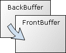

Hilfe
Flip


Aufruf
Parameter
Rückgabewert
Beschreibung
Beispiel
Siehe auch
Flip [Wert]
Parameter
| Wert |
0 aktualisiert das Bild sofort (schneller),
1 wartet auf VSync (für flimmerfreie Bilder = Standard) |
Rückgabewert
-
Beschreibung
Dieser Befehl wird bei Doublebuffering angewendet. Dabei muss man zuerst den Hintergrundbuffer mit Setbuffer Backbuffer() auswählen. Nun kann man alle Grafikbefehle wie z.B. Line ausführen. Zuletzt wird der Befehl Flip benutzt, um die Grafik sichtbar zu machen. Dabei werden Backbuffer und Frontbuffer miteinander vertauscht. Nur so können flimmerfreie Spiele entwickelt werden.
Backbuffer() auswählen. Nun kann man alle Grafikbefehle wie z.B. Line ausführen. Zuletzt wird der Befehl Flip benutzt, um die Grafik sichtbar zu machen. Dabei werden Backbuffer und Frontbuffer miteinander vertauscht. Nur so können flimmerfreie Spiele entwickelt werden.

Wird ein Grafikfenster nicht im Vollbild angezeigt, so übernimmt Windows das Pageflipping der Grafik von Backbuffer.
.Die Bildschirmseiten werden nicht einfach kopiert, sondern vertauscht. Um den unschönen Flimmereffekt zu verhindern, muss man das Bild immer komplett neuzeichnen.
Bei Pageflipping kann es zu unterschiedlichen Programmgeschwindigkeiten kommen. Man kann es so erklären: Stell dir vor du hast einen Monitor, der 100x pro Sekunde das Bild aufbaut. Dein neuer PC schafft sogar wahnsinnige 200 Bilder pro Sekunde. Aber dein uralter Rechner kann nur 50 Bilder liefern. So, nun wird das Spiel auf dem schnellen PC 100x aufgebaut (Bildschirmgrenze), auf dem alten aber nur 50x !!! Um eine gleiche Geschwindigkeit zu erzeugen, muss man die Framerate runterdrosseln, die auch ein langsamer Rechner noch vernünftig schafft. Benutze dafür den Befehl CreateTimer. Danach muss man die Objekte mit einer neuen Geschwindigkeit bewegen lassen.
. Danach muss man die Objekte mit einer neuen Geschwindigkeit bewegen lassen.Beispiel
Standardbeispiel:
Dieses Programm demonstriert flimmerfreie Bewegung:
Graphics 640, 480, 0, 1
Setbuffer Backbuffer()
While KeyDown(1) = 0
Winkel1 = (Winkel1 + 5) Mod 360
Winkel2 = (Winkel2 + 2) Mod 360
X = 320 + Cos(Winkel1) * 200 + Cos(Winkel2) * 120
Y = 240 + [[Sin](Winkel1) * 160 + Sin(Winkel2) * 80
Cls
Oval X-10, Y-10, 20, 20, 1
Flip
Wend
End
Graphics 640, 480, 0, 1
Setbuffer Backbuffer()
While KeyDown(1) = 0
Winkel1 = (Winkel1 + 5) Mod 360
Winkel2 = (Winkel2 + 2) Mod 360
X = 320 + Cos(Winkel1) * 200 + Cos(Winkel2) * 120
Y = 240 + [[Sin](Winkel1) * 160 + Sin(Winkel2) * 80
Cls
Oval X-10, Y-10, 20, 20, 1
Flip
Wend
End
Siehe auch
Graphics3D, VWait, SetBuffer, ScanLine, FrontBuffer, BackBuffer